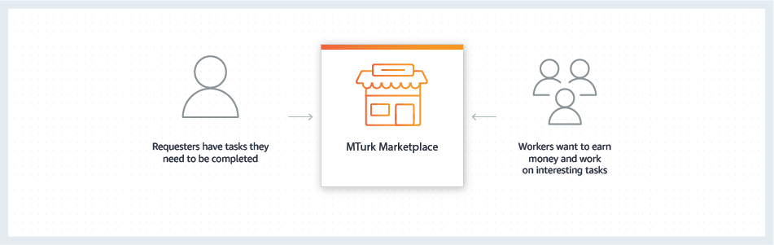

Amazon Mechanical Turk
Access a global, on-demand, 24x7 workforce
Amazon Mechanical Turk (MTurk) is a crowdsourcing marketplace that makes it easier for individuals and businesses to outsource their processes and jobs to a distributed workforce who can perform these tasks virtually. This could include anything from conducting simple data validation and research to more subjective tasks like survey participation, content moderation, and more. MTurk enables companies to harness the collective intelligence, skills, and insights from a global workforce to streamline business processes, augment data collection and analysis, and accelerate machine learning development.
While technology continues to improve, there are still many things that human beings can do much more effectively than computers, such as moderating content, performing data deduplication, or research. Traditionally, tasks like this have been accomplished by hiring a large temporary workforce, which is time consuming, expensive and difficult to scale, or have gone undone. Crowdsourcing is a good way to break down a manual, time-consuming project into smaller, more manageable tasks to be completed by distributed workers over the Internet (also known as ‘microtasks’).
Benefits
Optimize efficiency
MTurk is well-suited to take on simple and repetitive
tasks in your workflows which need to be handled
manually. Using MTurk to outsource microtasks ensures
that work gets done quickly, while freeing up time and
resources for the company – so internal staff can focus
on higher value activities.
Increase flexibility
Scaling up and down a workforce isn’t the easiest
undertaking. With access to a global, on-demand, 24x7
workforce, MTurk enables businesses and organizations to
get work done easily and quickly when they need it –
without the difficulty associated with dynamically
scaling your in-house workforce.
Reduce cost
MTurk offers a way to effectively manage labor and
overhead costs associated with hiring and managing a
temporary workforce. By leveraging the skills of
distributed Workers on a pay-per-task model, you can
significantly lower costs while achieving results that
might not have been possible with just a dedicated
team.
How it works
MTurk offers developers access to a diverse, on-demand workforce through a flexible user interface or direct integration with a simple API. Organizations can harness the power of crowdsourcing via MTurk for a range of use cases, such as microwork, human insights, and machine learning development.

Use Cases
Building, managing, and evaluating Machine Learning workflows
MTurk can be a great way to minimize the costs and time
required for each stage of ML development. It is easy to
collect and annotate the massive amounts of data required
for training machine learning (ML) models with MTurk.
Building an efficient machine learning model also requires
continuous iterations and corrections. Another usage of
MTurk for ML development is human-in-the-loop (HITL),
where human feedback is used to help validate and retrain
your model. An example is drawing bounding boxes to build
high-quality datasets for computer vision models, where
the task might be too ambiguous for a purely mechanical
solution and too vast for even a large team of human
experts.
“At AI2, we're pushing the state of the art of Artificial Intelligence, which often requires human-annotated data to train new systems and measure our progress. In particular, we use crowdsourcing platforms such as Amazon Mechanical Turk to build datasets that help our models learn common sense knowledge, which is often necessary to answer basic questions that are easy for humans but still quite hard for machines. Amazon Mechanical Turk provides a flexible platform that enables us to harness human knowledge to advance machine learning research.”
– Michael Schmitz, Director of Engineering, Allen Institute for AI
Business process outsourcing
A large, seemingly overwhelming task can sometimes be
transformed into a set of smaller, more manageable
microtasks that can each be accomplished independently.
Crowdsourcing can be an efficient organizational strategy
to harness innovation and agility by distributing work to
Internet users. Businesses or developers can use MTurk to
access thousands of on-demand workers—and then integrate
the results of that work directly into their business
processes and systems. Common examples include the
moderation of web and social media content, categorization
of products or images, and the collection of data from
websites or other resources.
“The F&B industry has always operated at the mercy of changing tastes and preferences of consumers. Our goal is to surface consumer insights and spot emerging trends, so our clients can effectively respond with effective strategies. Workers on Amazon Mechanical Turk respond to our requests to gather information from menus, websites, and other channels. We are able to leverage these human collective insights to better understand customer needs and uncover important market trends.”
– David Falck, Executive Director, Food Genius / US
Foods Data Science
Learn more about Amazon Mechanical Turk